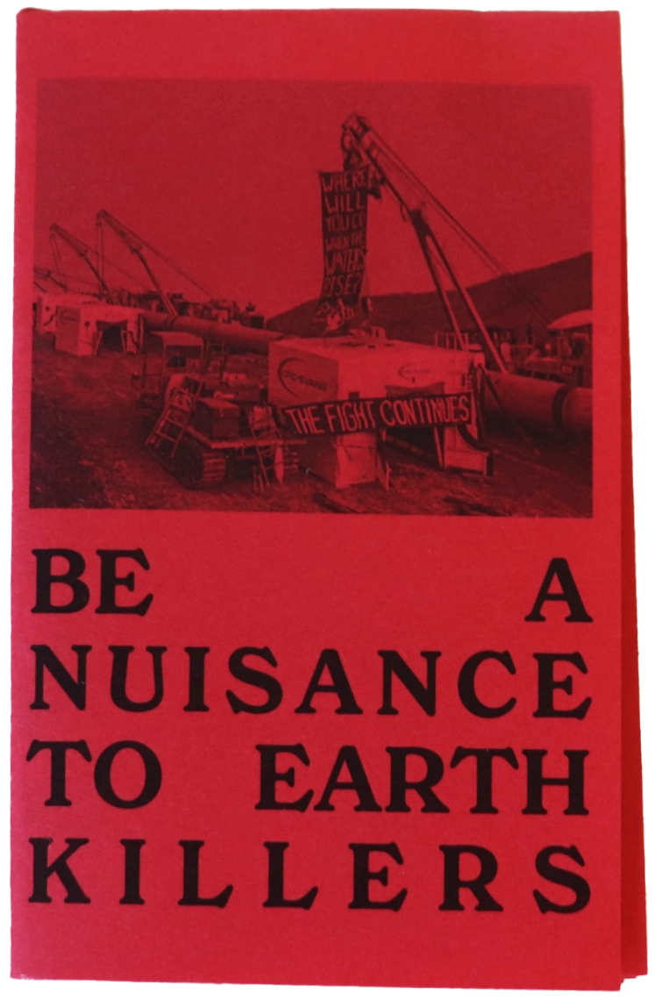
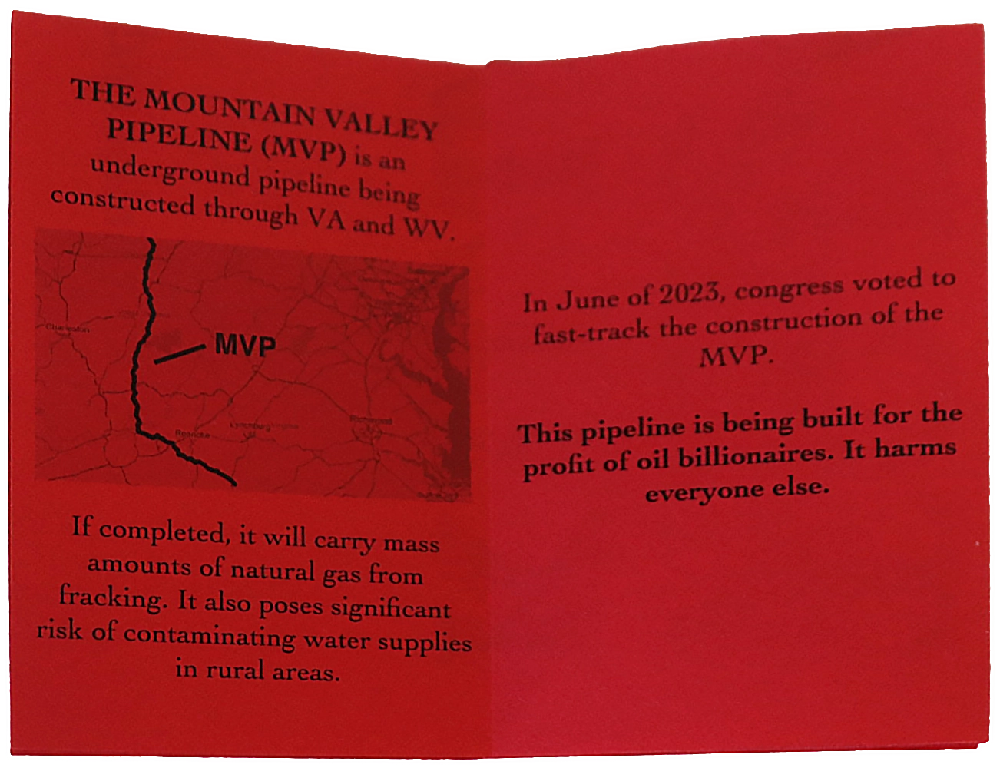
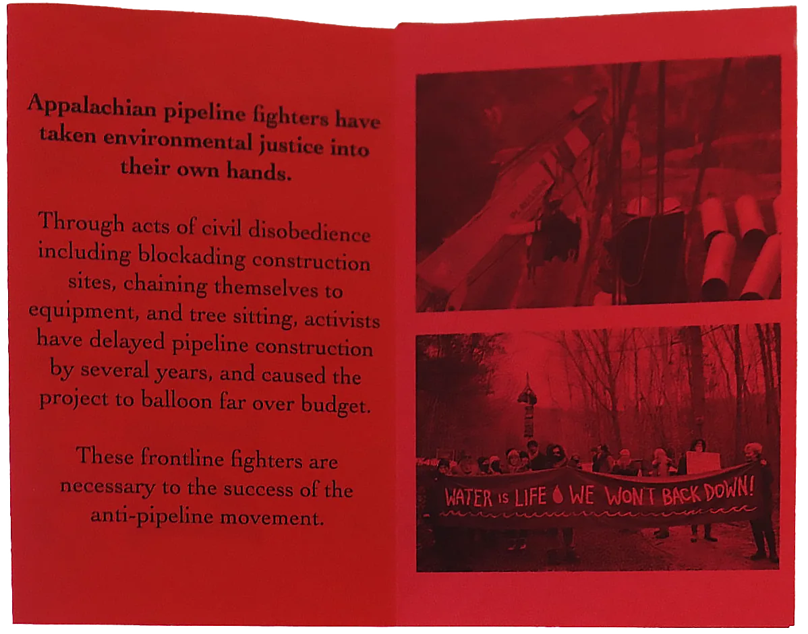
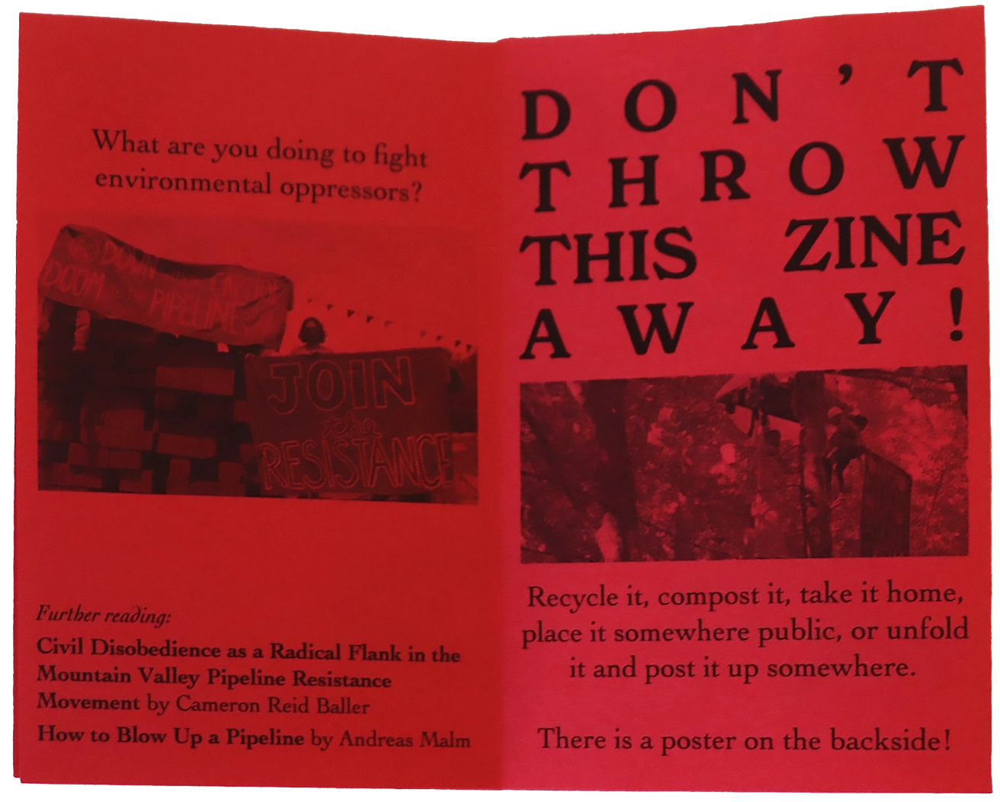
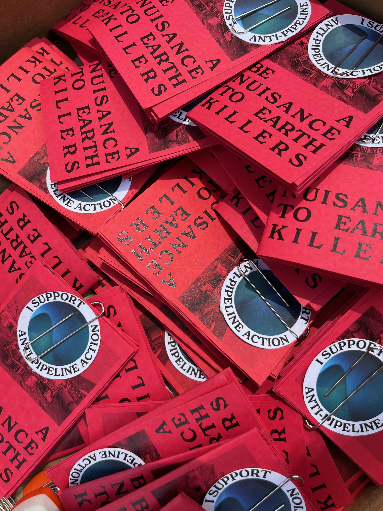
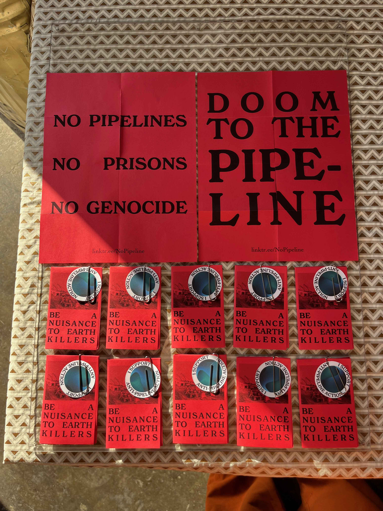
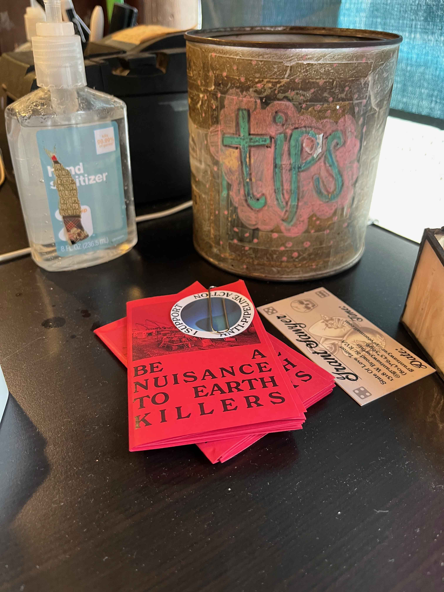
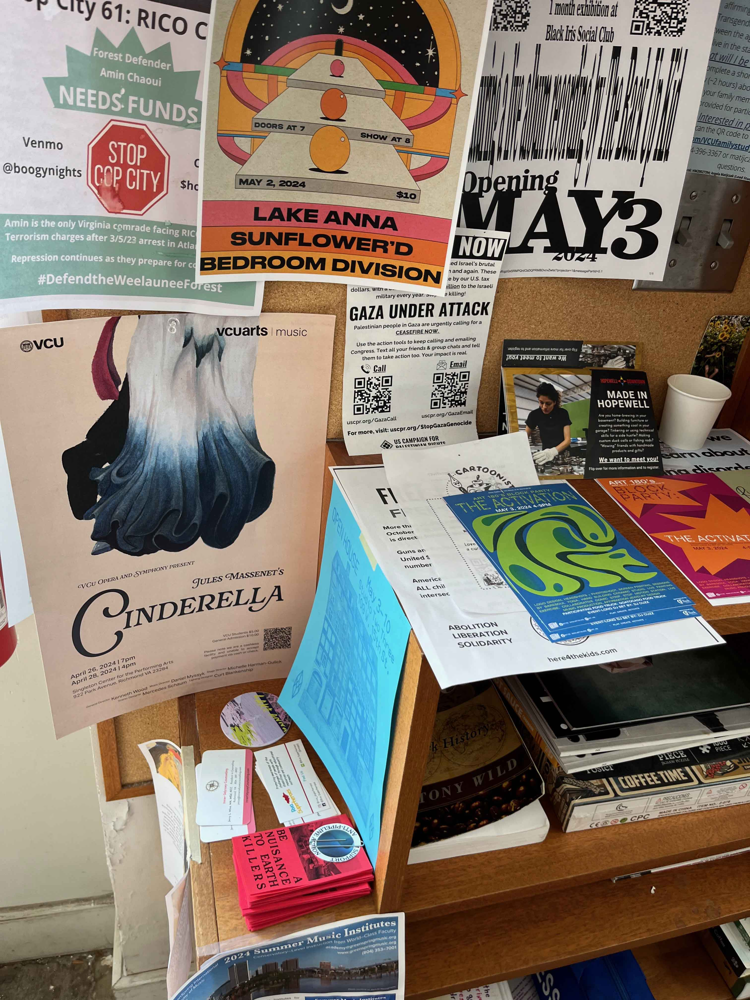
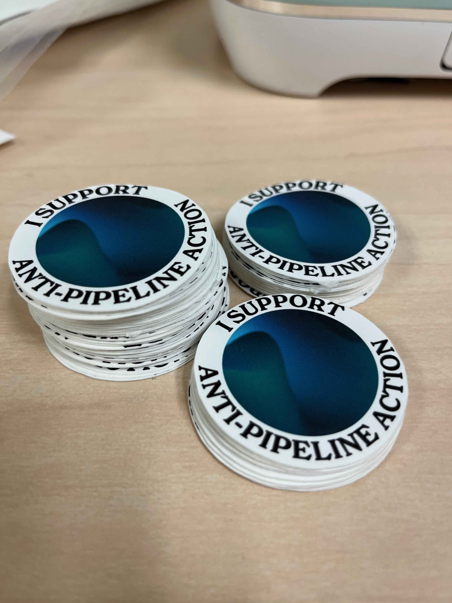

Please view this page on mobile, or return to homepage by clicking the above logo. Desktop page in progress.
Please view this page on mobile, or return to homepage by clicking the above logo. Desktop page in progress.
An 8-page call-to-action zine designed to spread awareness of the resistance movement against the Mountain Valley Pipeline in Virginia and West Virginia. Recontextualizes the 2023 paper "Civil Disobedience as a Radical Flank in the Mountain Valley Pipeline Resistance Movement" written by Cameron Baller.




The circulation of this zine was meant to reach a diverse audience of individuals who are unaware of the movement and have an interest in learning. Thus, many copies of the zine were printed, paired with a visually appealing sticker, and dispersed at various stores and art shows to be given away at no cost.




